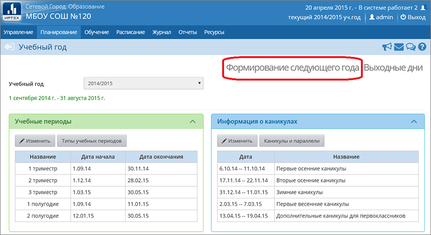
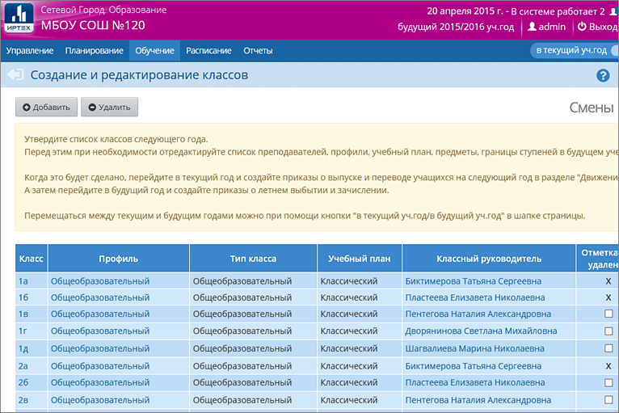
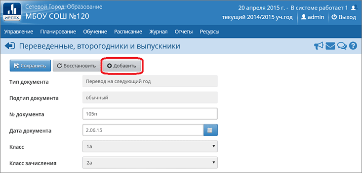
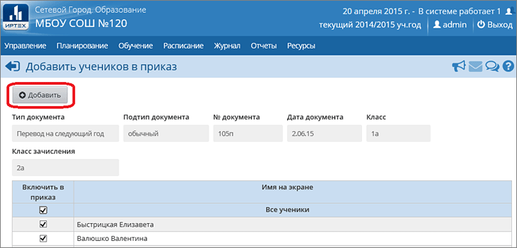
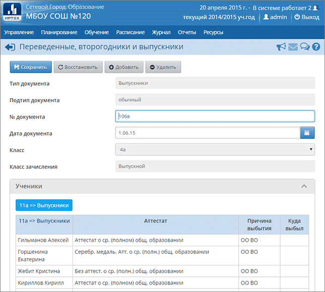
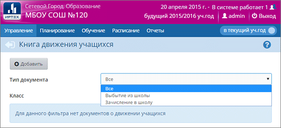
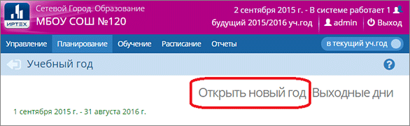
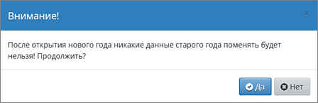

Право осуществлять переход на новый учебный год по умолчанию предоставлено Администратору системы в школе.
С 1 апреля в разделе Планирование->Учебный год и периоды становится активной кнопка Формирование следующего года.
Нажимать эту кнопку можно уже в апреле. Тот факт, что в системе приступили к формированию данных будущего года, не помешает в текущем году вести электронные журналы, выставлять итоговые отметки и т.д. Все разделы системы будут доступны до того момента, пока не будет полностью завершена процедура закрытия учебного года. «Будущие» данные не отображаются в текущем учебном году и не влияют на отчёты.
Таким образом, начиная с 1 апреля, Администратор сможет:
| · | редактировать Учебный план, Профили, Нагрузки для нового учебного года;
|
| · | формировать списки классов и получать отчёты о наполняемости классов для нового учебного года;
|
| · | приступать к созданию расписания для нового учебного года.
|
Внимание! Календарно-тематическое планирование (КТП) переносится в будущий учебный год сразу же после нажатия кнопки Формирование следующего года. Учителя не должны изменять КТП в текущем (закрываемом) году, иначе эти изменения не попадут в новый год.
Что проверить перед формированием следующего года
Перед тем как нажать кнопку Формирование следующего года, рекомендуется просмотреть список сотрудников и убедиться, что сотрудники, которые уже не работают в школе, имеют статус "Уволенный" (См. Увольнение сотрудников). Такие сотрудники не будут скопированы в будущий учебный год.
См. Какая информация копируется в новый учебный год?
Шаги формирования следующего года
1. Для начала процедуры закрытия учебного года Администратору необходимо перейти в раздел Планирование->Учебный год и периоды и нажать кнопку Формирование следующего года.

После нажатия кнопки Формирование следующего года интерфейс системы будет разделен на две части: будущий учебный год и текущий учебный год.
Для переключения между текущим и будущим учебным годом удобно использовать закладки с соответствующими названиями учебных годов в шапке страницы. До окончательного закрытия учебного года можно будет беспрепятственно перемещаться между годами.
|
|
| Если активен будущий год, то интерфейс будет выглядеть так:
|
| - и синий переключатель «В текущий уч.год» вернёт пользователя в текущий учебный год.
|
А если активен текущий год, то интерфейс будет выглядеть так:
| - и малиновый переключатель «В будущий уч.год» поможет пользователю перейти в «будущий» учебный год.
|
2. После нажатия кнопки Формирование следующего года произойдет автоматическое перемещение в будущий учебный год, в раздел Обучение для редактирования списка классов будущего учебного года. Классы можно удалять, добавлять, редактировать профиль и менять классного руководителя. По окончании редактирования нужно перейти в текущий учебный год (с помощью щелчка на синем переключателе "В текущий уч.год") и создать приказы о выпуске и переводе учащихся на следующий год в разделе Движение.

Внимание! Перевод на следующий год, включая формирование выпускников и второгодников, нужно проводить в разделе Движение в текущем учебном году (см. далее пп.3-8). А летнее выбытие и летнее зачисление – переключившись в будущий учебный год (см. далее п.9).
3. Для создания документов о переводе на следующий год нужно перейти в текущий учебный год, затем в разделе Управление->Движение учащихся выбрать тип документа «Перевод на следующий год».
Указать подтип документа:
| · | для 1-8-х классов и 10-х классов: "Обычный"
|
| · | для 9-х классов:
|
| · | "Завершение программы (после экзаменов)" - в случае успешного окончания 9-го класса,
|
| · | или "Условный перевод/выпуск" - при наличии академической задолженности (см. подробнее),
|
| · | для учащихся, прикреплённых к ОО (если такие есть): "В прикреплённые к ОО",
|
и нажать кнопку Добавить.

4. Далее нужно ввести номер документа, дату документа, выбрать класс и класс зачисления, нажать кнопку Добавить.

5. В открывшемся окне галочками отметить нужных учеников в поле «Включить в приказ» и нажать кнопку «Добавить».

6. Один документ может содержать несколько классов, для этого можно перечислить номера или даты отдельных приказов в поле "Номер документа":
7. Аналогичным образом перевести всех учеников, которые должны быть оформлены приказами о переводе. После чего нажать кнопку Вернуться.
8. По аналогичной схеме создаются документы о выпускниках, второгодниках.
Выпускники: как правило, приказы о выпуске оформляют для учащихся 11-х (12-х) классов, но если необходимо, можно создавать документы с типом «Выпускники» также для 4-х и 9-х классов.
Второгодники: приказы с типом «Второгодники» есть возможность создавать для учеников любых классов.

9. Для создания документов о летнем выбытии и зачислении необходимо перейти в будущий учебный год (с помощью щелчка на названии будущего учебного года в шапке страницы), в раздел Управление->Движение учащихся и воспользоваться типами документов «Зачисление в школу» и «Выбытие из школы».

Для документа о зачислении в конкретный класс, выберите подтип "Все зачисленные":

Дата приказа о зачислении в будущий год может начинаться с 1 февраля. (Возможность указать такую раннюю дату полезна, например, для зачисления будущих первоклассников.)
Внимание: какая бы ни была указана дата зачисления, в рабочих разделах системы (таких как Классный журнал, Отчёты и др.) в будущем году учащиеся будут числиться с 1 сентября.
10. После того, как приказами о движении будут охвачены все ученики без исключения, в интерфейсе будущего года, в разделе Планирование->Учебный год и периоды, будет активна кнопка Открыть новый год.
Эта кнопка становится доступной в школах и ОДО начиная с 25 августа, до этого времени кнопка недоступна.

Внимание! Перед тем как нажать кнопку Открыть новый год, внимательно проверьте в текущем году:
а) документы о переводе на следующий учебный год: все учащиеся должны быть зачислены в правильные классы;
б) документы о выпускниках и второгодниках.
Затем переключитесь в будущий учебный год и проверьте:
в) документы о летнем выбытии;
г) документы о летнем зачислении.
11. При нажатии кнопки Открыть новый год система выведет предупреждающее сообщение о невозможности внесения изменений в данные старого года. Если вы уверены, нажмите «Да».

Если не все учащиеся были переведены в новый учебный год, то система не позволит закрыть его и выведет соответствующее сообщение. Необходимо будет вернуться в текущий учебный год и дополнить документы о движении. См. Как найти учащихся, для которых не создан документ о переводе или выпуске?
На этом процедура закрытия учебного года и открытия нового учебного года будет завершена.
12. После того как окончательно открыт новый учебный год, обязательно проверьте и измените, если необходимо:
а) профили классов и классных руководителей.
б) очень важно! В экране "Планирование->Учебный год и периоды" проверьте, что во всех параллелях выбран верный тип учебного периода (например, в 1-9 кл. - четверти, в 10-11 кл. - полугодия), причём по каждому профилю.
в) тип учебного плана для классов: "классический" или индивидуальный учебный план.
г) проверьте границы учебных периодов и каникулы.
Примечание. Рекомендуемые сроки создания документов о движении при переходе на новый учебный год:
Май-июнь - создаются приказы:
| · | о переводе учеников из 1-8-х классов и 10-х классов на следующий учебный год;
|
| · | об оставлении на повторное обучение (т.е. о второгодниках – это те ученики, которые имеют академические задолженности).
|
| · | о переводе учеников из 9-х в 10-е классы, либо об оставлении 9-классников на повторное обучение;
|
| о выпуске учеников из 11-х классов.
|
| · | о выбытии из школы
|
| о зачислении в школу.
|
| · | о формировании 1-х классов;
|
| · | о формировании 10-х классов.
|